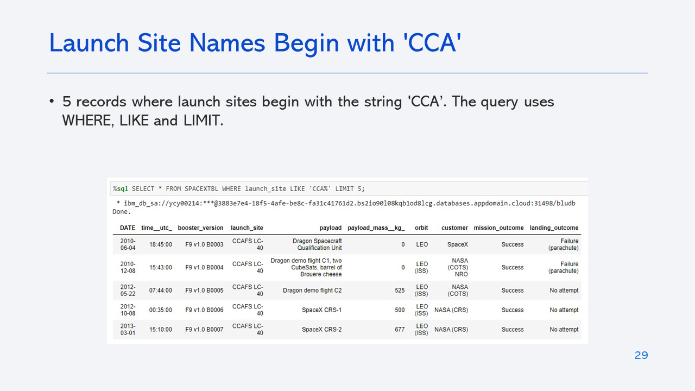
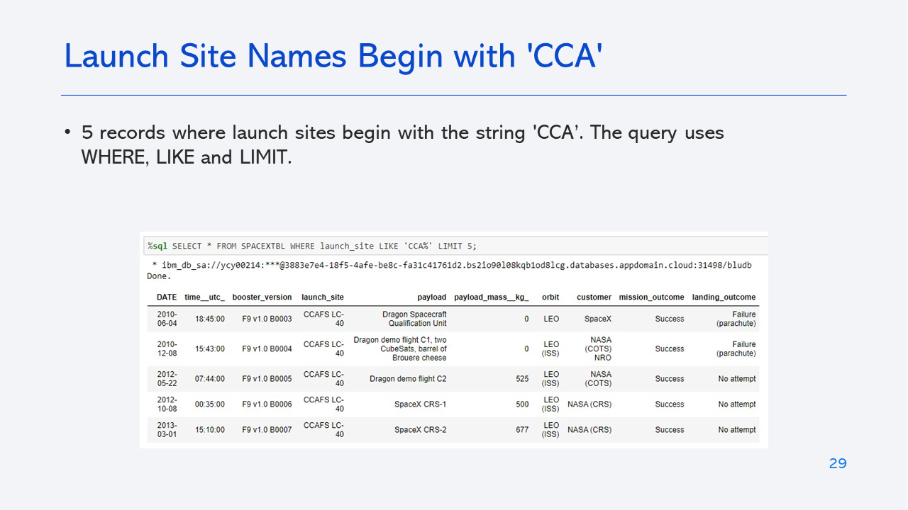

Winning Space Race with Data Science
In this capstone, we will predict if the Falcon 9 first stage will land successfully.
SpaceX advertises Falcon 9 rocket launches on its website, with a cost of 62 million dollars; other providers cost upward of 165 million dollars each, much of the savings is because SpaceX can reuse the first stage. Therefore if we can determine if the first stage will land, we can determine the cost of a launch. This information can be used if an alternate company wants to bid against SpaceX for a rocket launch.

Executive Summary
Introduction
Methodology
EDA with Visualization notebook
Launch Sites Locations Analysis with Folium notebook
Interactive Dashboard with Ploty Dash
Insights Drawn from EDA
 

Launch Sites Proximities Analysis
Build a Dashboard with Plotly Dash
Predictive Analysis (Classification)
Conclusions
Appendix
For notebooks, datasets and scripts, follow this GitHub repository link: Applied Data Science Capstone